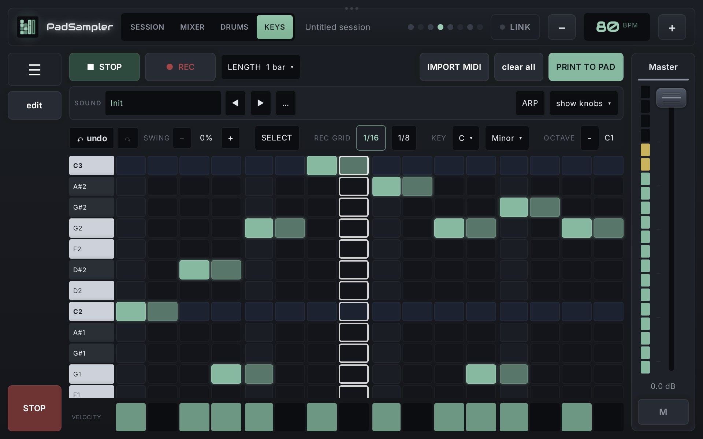

PadSampler Manual
For PadSampler 2.0 on Android and Windows. Both versions work the same way; differences are noted.
1. Getting started
- Install. Windows: run the installer from the download page. Android: install from Google Play.
- Connect your audio output. Android: wired headphones or a USB audio interface give the lowest latency; Bluetooth adds a lot of delay and is not suitable for playing live. Windows: open ⚙ and pick your audio interface (see Windows settings).
- Optional: plug in a Launchpad Mini MK3 (USB). On Android tablets and phones use a USB-C OTG cable or adapter. PadSampler finds it on its own.
- Load some samples onto the pads (next sections), set the tempo and play.
2. The screen

Top bar (the same on every screen)
- SESSION · MIXER · DRUMS · KEYS: the four screens.
- Session name: the name of the current session.
- SET 0:00 (left column, above the clock): the set timer. It starts by itself with the first clip (or Drums / Keys) and keeps running until
you reset it. Tap it to choose a set length (15–120 min) and whether it shows the elapsed (
32:14 / 45:00) or the remaining time. The last 5 minutes turn orange; after the end it turns red and counts the extra time (+2:10). No sounds, no pop-ups. - 8 dots: the eighth notes of the current bar. They show where the beat is.
- LINK: Ableton Link on/off (see Ableton Link).
- − BPM +: tempo, 60 to 240 BPM. Tap the number to type a tempo.
Left rail
- ☰ opens the menu: load samples, save / export / load / new session, set list, Link options, status (MIDI and audio output) and About.
- edit / done: edit mode for putting samples on pads.
- Clock and battery: the current time and the battery level on Android and Windows laptops (orange below 20 %, red below 10 %, a mint lightning bolt while charging).
- KILL SWITCH (red, bottom left): stops everything immediately, including Drums and Keys. Always within reach.
Master
The master fader and meter are on the right, with M (mute) below.
Messages (saved, printed, errors) appear for a few seconds at the bottom of the screen.
3. Loading samples
- Tap EDIT on the left (or ☰ → Load samples). Pads get a yellow outline and don't play while edit mode is on.
- Tap a pad. The pad dialog opens:
- Browse library: search and preview your sample folders (next section).
- Choose a file from storage: pick a WAV, AIFF or MP3 file directly.
- Loop (repeats until stopped) or One-shot (plays to the end once).
- Original BPM of this sample: the tempo the sample was made at. Set for all samples applies it to every pad.
- Edit in Drums / Edit in Keys: for pads made with Print to pad.
- Remove sample.
- Tap DONE when finished.
Samples are copied into the session, so they keep working even if you move or delete the original files. The pad shows the folder name of the sample, LOOP or SHOT, and the key if it is in the file or folder name.
4. Sample library
The library indexes the folders where you keep your samples, so you can find and audition them fast.
- Add folder: choose a folder with samples once. PadSampler scans it, including all subfolders. Rescan picks up new files.
- Left: the folder tree (All samples = everything). On a narrow screen open it with Folders. Right: the samples in the selected folder and its subfolders.
- Search: all words must match the file name or path.
- Filters: All / Loops / One-shots, Near N BPM (loops close to the session tempo), and categories Drums, Bass, Keys, Vocals, FX (from the file names).
- Tap a row to preview, tap again to stop. Preview can play at the original speed or at the session tempo. Preview goes straight to the output and is not affected by the master fader or bar timing.
- Use puts the sample on the pad. Fill column fills a whole column from one folder.
- Remove a library folder… under the tree removes a folder from the library (your files are not touched).
5. Playing clips
- A column is a track, a row is a scene. One clip per track plays at a time.
- Tap a pad: the clip starts on the next bar. While it waits, it blinks. Another clip in the same column replaces the playing one exactly on the bar (with a short fade).
- Tap a playing clip: it stops on the next bar. Tap a waiting clip: the start is cancelled.
- ▶ 1 … ▶ 6 (right of the grid) launch a whole scene on the next bar.
- Bottom row: one button per track. The mode button at the bottom right switches the row between STOP (stop the track on the next bar), SOLO and MUTE.
- KILL SWITCH on the left stops everything right away.
- A playing pad lights up and shows its progress at the bottom edge.
6. Tempo and time-stretch
- Every sample has an original BPM. When the session tempo is different, PadSampler time-stretches the sample to the tempo without changing its pitch (Rubber Band).
- The original BPM is read from the file or folder name, for example
Funky Drums 124 BPM.wav. If there's none, it is estimated from the length of the loop (1, 2, 4, 8 or 16 bars). You can correct it in the pad dialog. - The first sample in a session with a known BPM also sets the session tempo.
- You can change the tempo while playing. The beat changes immediately; samples are re-stretched in the background (playing ones first) and switch to the new version on the next bar.
- A loop that is close to a whole number of bars is stretched to exactly that many bars, so it never drifts.
7. Mixer

- For each of the 8 tracks: FX, PAN, level meter, fader with dB value, M (mute) and S (solo).
- FX opens the effects of that track: REVERB and DELAY (how much of the track goes into the shared reverb and delay: more reverb = further away, so you can place every track in space instead of everything sounding flat) and a 3-band EQ (LOW, MID, HIGH, ±12 dB). The delay follows the tempo (1/8 dotted) and bounces left and right. On a phone the FX button is smaller. Reset turns all effects of the track off; double-tap a knob to reset it. The FX button lights up when an effect is on. Effects that are off use no CPU. Everything is saved with the session.
- A limiter on the master is always on (no settings): when the mix gets too loud it turns it down just enough, so it never distorts by clipping. Quieter mixes pass untouched.
- Master has a DJ FILTER for the whole mix (also Drums and Keys): turn left to make it darker (low-pass, down to the bass), right to make it thinner (high-pass). In the middle it is OFF; double-tap to return there. Great for transitions and build-ups.
- Drag the fader or the pan knob. Double-tap the pan knob to center it.
- The Master channel is on the right.
- Fader, pan, mute and solo are saved with the session.
8. Drums

Pattern
- 8 sounds (lanes) × 16 steps per bar. Tap a step to switch it on or off.
- PLAY starts the drums on the next bar. Drums play until you stop them (or press KILL SWITCH). Changing screens doesn't stop them.
- LENGTH: 1, 2, 4 or 8 bars. For longer patterns choose which bar you see. Making a pattern longer copies the existing bars into the new ones.
- SWING 0–100 %: delays every second sixteenth.
- The velocity bar under the grid sets the strength of each step for the selected sound. Softer steps are paler.
- undo / redo (Windows also Ctrl+Z / Ctrl+Y).
- CLEAR ALL clears every step.
Sounds
- Tap a sound name to hear and select it. M mutes the lane; the bar under the name is the lane volume.
- KIT ▾ loads a built-in kit: 808, 909, Electro, Lo-Fi, or an acoustic kit: Acoustic, Rock, Jazz (lane 7 = crash, lane 8 = ride), or Percussion (congas, bongos, clave, tambourine, agogo, timbale; great on a second track next to a drum kit). Steps stay as they are. My kits: KIT ▾ → Save current kit… saves all 8 lanes (your samples and built-in sounds) with their volumes under a name. It then appears under MY KITS in every session: one tap loads the whole kit back. ✕ deletes it. Steps are not part of a kit. In the sound window (tap a lane name) the built-in sounds are in three rows: ELECTRONIC, ACOUSTIC (kick, snare, side stick, hi-hats, tom, crash, ride) and PERCUSSION (conga low / high, bongo low / high, timbale, clave, tambourine, agogo; SNAP on congas and bongos = slap).
- … next to a sound opens its dialog:
- BUILT-IN SOUND: choose a type (Kick, Snare, Clap, Rim, Closed HH, Open HH, Tom, Cymbal, Cowbell, Zap, Shaker) and shape it with TUNE, DECAY, TONE, SNAP, GRIT. ▶ plays it. Double-tap a knob to reset it.
- YOUR OWN SAMPLE: from the library or a file.
- Clear steps, Remove sound.
Import MIDI
IMPORT MIDI reads a .mid file. Drum notes (General MIDI) go to the matching lanes: kick, snare,
clap/rim, closed hat, open hat, tom, cymbal, percussion. If the file has several parts, you pick one. The import replaces
the steps; your sounds stay.
9. Keys

The synth
- PRESET: ◀ ▶ step through presets; … shows the list (60 built-in, grouped as Bass, Lead, Pad, Keys, Orchestra, FX; Orchestra = analog-style trumpet, brass section, sax, clarinet, flute, oboe, violin, cello, strings, pizzicato and harmonica) and lets you save or delete your own.
- GLIDE, VOICES (mono = one voice with legato, or up to 8 for chords), VIBRATO (pitch wobble that starts a moment after the note, like a real player), VOLUME.
- OSCILLATORS 1–3: WAVE (triangle, saw, square, wide and narrow pulse; tap to change), OCT, DETUNE (oscillators 2 and 3).
- MIXER: level of each oscillator and NOISE.
- FILTER: 24 dB ladder low-pass: CUTOFF, EMPHASIS (resonance), CONTOUR (how much the filter envelope opens it), KEY TRK, and its own ATTACK / DECAY / SUSTAIN / RELEASE.
- LOUDNESS: the volume envelope. VEL>TONE: how much harder playing makes the sound brighter (like a horn).
- ▲ (top right of the panel) folds it away to give the piano roll more room.
ARP / FX
- Arpeggiator: on/off, MODE (up, down, up/down, random, as played), RATE (1/4 to 1/32, with triplets), OCTAVES 1–4, GATE, HOLD. It plays in time with the bar, also from the pattern and in Print to pad.
- COLOR: DRIVE and CHORUS. DELAY: TIME (synced to tempo), FEEDBACK, MIX (ping-pong). REVERB: SIZE, MIX.
- Loading a preset doesn't change the arpeggiator and effects.
Piano roll

- KEY and scale (Major, Minor, Dorian, Phrygian, Mixolydian, Harmonic minor, pentatonics, Blues, Chromatic): the piano roll shows only the notes of the scale. OCTAVE − / + moves the view.
- Tap an empty cell to add a note, tap a note to delete it. The keys on the left play while held.
- PLAY, LENGTH, SWING, velocity bar, undo / redo and CLEAR ALL work like in Drums.
- SELECT: drag a box around notes or tap notes to select them, then drag to move them, or use ALL, ◀ ▶, to bar and DEL.
- IMPORT MIDI loads a melody from a
.midfile (you pick the part if there are several).
Recording live
- Press ● REC. If Keys isn't playing, you get a metronome and one bar of count-in.
- Play on the screen keys, the Launchpad or a MIDI keyboard. The pattern loops and every pass adds notes (overdub).
- Press REC again to stop recording; the pattern keeps playing.
REC GRID (1/16 or 1/8) sets how note starts are quantized. One recording pass is one undo step.
10. Print to pad
PRINT TO PAD (on Drums and Keys) renders the pattern into a WAV loop and puts it on a pad, so you can launch it like any other clip.
- Pick the pad in the window that opens (all 6 × 8 pads; on a phone, scroll the window). A pad that already has a sample is replaced.
- The loop is exactly the pattern length at the current tempo, and seamless: delay and reverb tails continue into the start.
- Pick a name: Drums, Beat, Percussion, Hats, Fill or FX on Drums; Bass, Chords, Melodic, Lead, Keys, Pads, Arp, Brass, Synth or FX on Keys, or type your own. It becomes the pad label and the folder name when you export the session.
- The pad remembers the pattern and the sounds. In edit mode open the pad and choose Edit in Drums or Edit in Keys to change it and print again.
11. Sessions and set list
A session is one song: samples on pads, tempo, mixer, Drums and Keys. All in ☰ → SESSION:
- Save session…: give it a name. The same name overwrites.
- Load session…: list of your sessions with Load, Export and Delete. Loading stops playback and replaces everything.
- New session…: an empty session.
- Export session…: choose a folder; PadSampler writes a
.padsessionfile (the whole session in one file) and a copy of all samples sorted in folders (Drums, Bass, …), handy for a DAW. - Import session file… (in Load session) opens a
.padsession. Use it to move sessions between tablet and computer. An import never overwrites: a session with the same name gets a number.
Set list
☰ → Set list…: add your sessions in the order of the show, reorder with ▲ ▼. ◀ Prev / Next ▶ or a tap on a song loads it.
12. Ableton Link
Link keeps PadSampler in time with Ableton Live and other Link apps on the same network. There is no master: anyone can change the tempo.
- Tap LINK in the top bar. It turns green and shows how many other apps are connected. Link is always off when the app starts.
- While Link is on, tempo and bar position come from Link. Clips still start on the bar, on Link's bar.
- Start / stop: starting a clip here starts the transport in the other apps; STOP in Live stops all clips here; KILL SWITCH here stops the others.
- Link audio (☰ → ABLETON LINK): sends PadSampler's master output to Ableton Live as the source "PadSampler Master". In Live choose it as the input of an audio track.
- Link offset (☰ → ABLETON LINK): shift PadSampler earlier or later (±200 ms) if it sounds slightly off from the others. Output latency is already compensated automatically.
13. Launchpad Mini MK3
Plug the Launchpad in over USB. PadSampler switches it to programmer mode and lights it up. The ☰ menu (STATUS) shows whether it is connected.
Buttons on every screen
| Button | Action |
|---|---|
| ▲ / ▼ | Tempo +10 / −10 |
| ▶ / ◀ | Tempo +1 / −1 |
| Session | Switch between Session and Mixer |
| Drums | Drums screen |
| Keys | Keys screen |
Session
- Top row: a light that runs through the eighth notes of the bar (visual metronome).
- The 6 rows below it: the clips, 6 scenes × 8 tracks, in the color of the clip state (dim = loaded, blinking = waiting, pulsing = playing).
- Right column: launch scenes 1–6.
- Bottom row: stop, solo or mute per track. The bottom right button (Stop Solo Mute) switches the mode: red = STOP, blue = SOLO, yellow = MUTE.
Mixer
- Each column is a fader with 7 steps (top = 0 dB). A playing track's fader pulses.
- Bottom row: mute per track.
Drums
- Top 4 rows: 32 steps (2 bars) of the selected sound. Right column: pages for 4 and 8 bar patterns.
- Third row from the bottom: the 8 sounds (press = play and select). Second row from the bottom: mute per sound.
- Bottom row: Play/Stop, length 1/2/4/8 bars, and (last pad) clear the selected sound.
- Bottom right button: Play/Stop.
Keys
- The grid is a keyboard in your scale (the key note is yellow). Each row is a few scale steps higher.
- Bottom row: Play/Stop, octave − / +, and STEP mode (last pad): the top 4 rows become 32 steps for the selected note, the rows below select the note.
- Bottom right button: Play/Stop. The button above it: REC. ▼ shows / hides the synth knobs.
14. MIDI keyboard
- Any USB class-compliant MIDI keyboard plays the Keys synth, on every screen. Velocity, pitch bend (±2 semitones) and the mod wheel (opens the filter) work.
- MIDI IN on the Keys screen: Auto (all inputs except the Launchpad), one device, or Off.
- MIDI LEARN: tap MIDI LEARN (on the right, under ARP / FX), tap a knob, then move a knob or slider on your keyboard. Every synth, arpeggiator and effect knob can be mapped. The mapping is saved per keyboard.
- MIDI presets: in the MIDI LEARN bar tap presets. Save the current mapping under a name, tap a preset to load it
for the connected keyboard, or export it to a
.padmidifile and Import file… it on another tablet, on Windows, or share it with other players who have the same keyboard.
15. Windows settings
The ⚙ button in the top bar opens the settings:
- AUDIO OUTPUT: Driver (WASAPI or ASIO), Device, Buffer (smaller = lower latency, more risk of clicks), Sample rate. Press Apply audio settings. If the device can't be opened, the previous output is restored.
- MIDI CONTROLLER: Auto finds the Launchpad by name; you can also pick a port. Refresh list after plugging in.
- SCREEN: window or full screen (also F11). The screen doesn't turn off while PadSampler runs.
- VERSION: shows your version. Check for updates asks GitHub for the latest version; if there is a newer one, Download opens the download page. PadSampler never checks by itself, only when you press the button. Installing the new version over the old one keeps your sessions and settings.
%APPDATA%\PadSampler.16. Phone layout
On a phone (landscape) PadSampler shows a compact layout:
- The master channel is shown only on Session and Mixer. Mixer channels are narrower and have no pan knob (pan set on a tablet or computer still applies).
- Drums and Keys: rarely used buttons (IMPORT MIDI, CLEAR ALL) are in the ⋯ menu. VEL opens swing and the velocity bar over the grid. Lanes and the piano roll scroll up and down.
- Rows of buttons that don't fit scroll sideways.
17. Tips for live use
- Save every song as a session and put them in a set list.
- Android: check ☰ → STATUS: it should say Battery: unrestricted (tap the yellow line to fix it). Turn on Do Not Disturb.
- Use wired outputs, not Bluetooth.
- Test the whole set on the real device before the show, with the same output and controller.
- Use Link only on a network you control (phone hotspot or own router).
18. Troubleshooting
No sound
- Check the master fader and M (mute) and the track faders in the Mixer.
- Windows: open ⚙ and check the driver and device. The line at the bottom of the settings shows whether audio is running.
Clicks or dropouts
- Windows: increase the buffer in ⚙. Close other heavy programs.
- Android: close other apps. Changing tempo with many long samples takes a moment of processing; it happens in the background.
The Launchpad doesn't light up
- Check the cable (Android: OTG adapter). Unplug it and plug it in again.
- Windows: ⚙ → MIDI CONTROLLER → Refresh list, choose Auto. Only one program can use the Launchpad at a time on Windows, so close other music software that uses it.
Link doesn't find Ableton Live
- Both devices on the same network; in Live turn on Link in Preferences → Link, Tempo & MIDI.
- Some public or venue networks block devices from seeing each other. Use a phone hotspot.
A loop is out of time
- Check its original BPM in the pad dialog (edit mode → tap the pad) and correct it.
Something missing or wrong? Open an issue on GitHub.